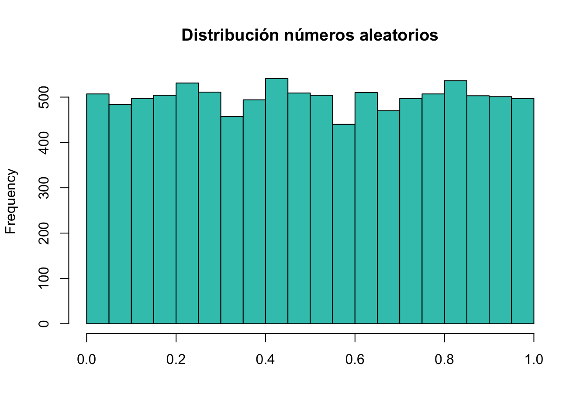
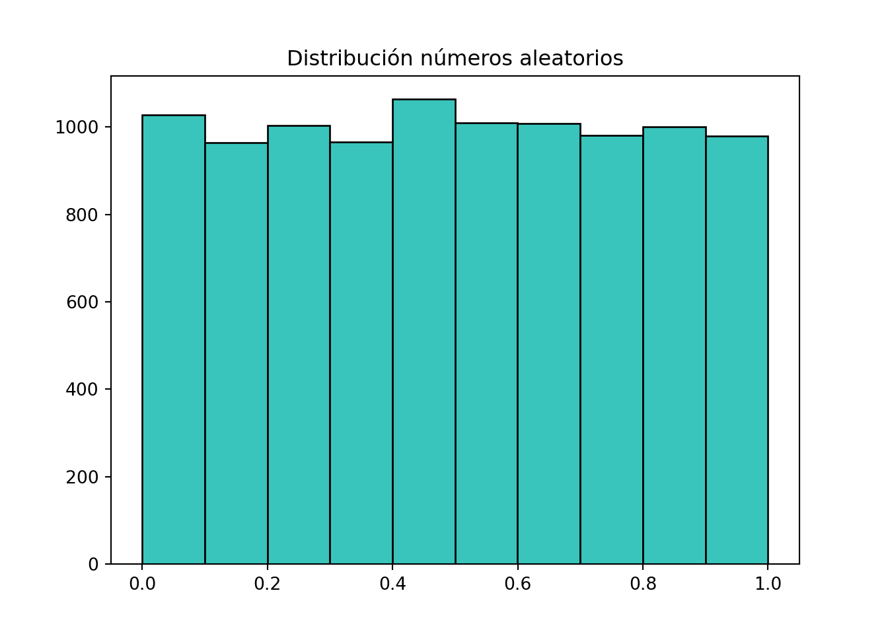
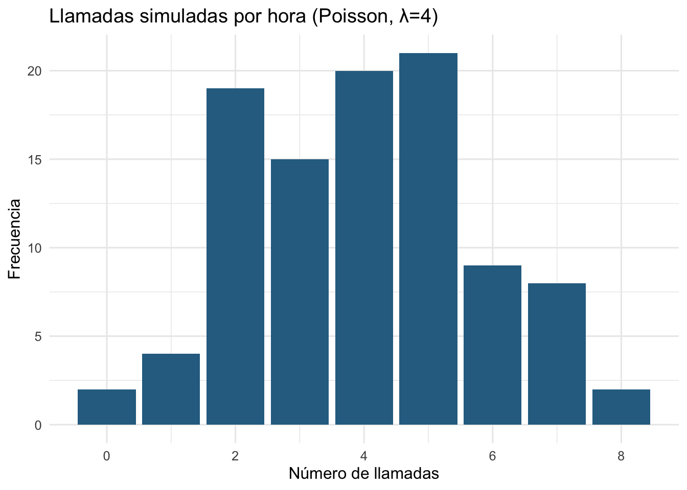
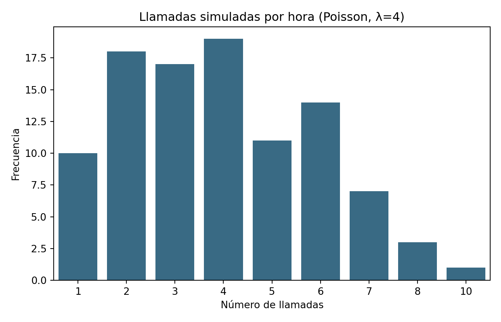

Tema 3: Automatización de distribuciones con R y Python
IA y Programación
Autor/a
Diego Huaraca
Fecha de publicación
19 de septiembre de 2026
Motivación
¿Por qué nos importa esto?
¿Cuál es la pérdida máxima que podría tener un portafolio de inversión mañana, con un 95% de confianza? ¿Cuántos siniestros se podrían esperar en una cartera de 5000 pólizas de vehículos? ¿Cuánto capital debe mantener una aseguradora para respaldar miles de pólizas cuando la mortalidad futura es incierta, con un 98% de confianza? Estas preguntas no tienen una respuesta única y exacta: tienen una distribución de posibles resultados. La simulación nos permite generar miles de escenarios posibles en segundos y responder preguntas de riesgo e incertidumbre que serían muy difíciles de resolver con álgebra pura. En este tema el estudiante aprenderá a simular variables aleatorias, a automatizar el ajuste de una distribución a datos reales, y a aplicar todo esto en una de las herramientas más usadas en finanzas: el cálculo del Value at Risk (VaR) mediante simulación Montecarlo.
Objetivos de aprendizaje
Al finalizar este tema, el estudiante será capaz de:
Simular variables aleatorias discretas y continuas en R y Python.
Usar herramientas automatizadas (“agentes”) de ajuste de distribuciones para identificar qué distribución describe mejor un conjunto de datos.
Explicar la relación conceptual entre la simulación Montecarlo clásica y la IA generativa moderna.
Calcular el Value at Risk (VaR) de un portafolio mediante simulación Montecarlo.
Número pseudoaleatorios y semillas
La generación de variables aleatorias discretas y continuas dependen directamente de una fuente primaria: los números pseudoaleatorios (PRNG, por sus siglas en inglés), que son algoritmos deterministas definidos por relaciones de recurrencia que producen secuencias numéricas cuyas propiedades estadísticas resultan indistinguibles de una secuencia genuinamente aleatoria.
El punto de partida teórico para la generación de números pseudoaleatorios es el Generador Congruencial Lineal (LCG). Se define mediante la ecuación en diferencias: \[X_{n+1} = (a\cdot X_n + c) \mod m\] donde:
\(X_0\) es la semilla \((X_0 \geq 0)\).
\(a\) es el multiplicador \((a > 0)\).
\(c\) es el incremento \((c \geq 0)\).
\(m\) es el módulo \((m > 0)\).
Para obtener una variable en el intervalo \((0,1)\), se normaliza el entero obtenido: \[U_n = \frac{X_n}{m}\] El período máximo de un LCG es \(m\).
En la modelización actuarial y financiera, la reproducibilidad es un requisito crítico. Permite auditabilidad de modelos de riesgo, validación de resultados por terceros y depuración de código. Fijar la semilla inicial determina la secuencia exacta de variables aleatorias generadas.
Ejercicios resueltos
Ejercicio 1: Considere un Generador Congruencial Lineal (LCG) definido por la siguiente relación de recurrencia: \[X_{n+1} = (7\cdot X_n + 3) \mod 16\] con una semilla inicial \(X_0 = 5\). Se pide:
Calcular los primeros 5 valores enteros de la secuencia: \(X_1, X_2, X_3, X_4, X_5\).
Ejercicio 1: Una firma de consultoría actuarial utiliza un Generador Congruencial Combinado constituido por dos componentes individuales \(LCG_1\) y \(LCG_2\) definidos por las siguientes relaciones:
Componente 2 \((LCG_2)\): \[X_{2,n+1} = (40692\cdot X_{2,n})\quad \text{ mod }\quad 2147483399\] La combinación de ambos componentes para obtener el valor uniforme \(U_n\in (0,1)\) sigue la regla: \[Z_n = (X_{1,n} - X_{2,n})\quad \text{ mod }\quad (m_1 - 1)\]\[U_n = \begin{cases}
\frac{Z_n}{m_1} & \text{ si } Z_n > 0 \\
\frac{m_1 - 1}{m_1} & \text{ si } Z_n = 0
\end{cases}\] donde \(m_1 = 2147483563\).
Dados los estados iniciales \(X_{1,0}=12345\) y \(X_{2,0}=67890\), se pide calcular los primeros 5 valores de la secuencia \(U_1, U_2, U_3, U_4, U_5\).
A pesar de la amplia diversidad de algoritmos diseñados para la generación de números pseudoaleatorios, cada uno con sus propias complejidades matemáticas, estructuras recursivas y propiedades estadísticas, la práctica computacional moderna no requiere reimplementar estas fórmulas desde cero. Tanto R como Python integran generadores de alto rendimiento y comprobada solidez técnica mediante comandos directos y altamente optimizados (como runif() en R o la suite numpy.random en Python).
# Histograma de 10000 números aleatorios uniformes en (0,1)hist(runif(10000), main ="Distribución números aleatorios", col ="#39c5bb", xlab ="")

# Histograma de 10000 números aleatorios uniformes en (0,1)import matplotlib.pyplot as plt plt.hist(np.random.uniform(0, 1, 10000), color="#39c5bb", edgecolor="black")plt.title("Distribución números aleatorios")plt.xlabel("")plt.show()

Simulación de variables aleatorias discretas
Una variable aleatoria discreta toma un conjunto finito o contable de valores (p. ej. 0, 1, 2, 3…). En la modelización del riesgo actuarial, estas distribuciones son fundamentales para evaluar principalmente la frecuencia de siniestros y el conteo de eventos. Dos de las más usadas:
Binomial — número de éxitos en \(n\) ensayos independientes con probabilidad de éxito \(p\) (p. ej. artículos defectuosos en un lote).
Poisson — número de eventos que ocurren en un intervalo fijo de tiempo/espacio, dado una tasa promedio \(\lambda\) (p. ej. llamadas por hora a un call center).
ggplot(data.frame(llamadas), aes(x = llamadas)) +geom_bar(fill ="#2C6E91") +labs(title ="Llamadas simuladas por hora (Poisson, λ=4)",x ="Número de llamadas", y ="Frecuencia") +theme_minimal(base_size =12)

import numpy as npimport pandas as pdimport matplotlib.pyplot as pltimport seaborn as snsrng = np.random.default_rng(42)# Binomial: 100 lotes de 20 artículos, prob. de defecto = 0.05defectos = rng.binomial(n=20, p=0.05, size=100)defectos
fig, ax = plt.subplots(figsize=(7, 4.5))sns.countplot(x=llamadas, color="#2C6E91", ax=ax)ax.set_title("Llamadas simuladas por hora (Poisson, λ=4)")ax.set_xlabel("Número de llamadas")ax.set_ylabel("Frecuencia")plt.tight_layout()plt.show()

Ejercicios resueltos
Ejercicio 1: Se producen lotes de 50 piezas con una probabilidad de defecto de 2% por pieza. Simula 1000 lotes y estima (empíricamente) la probabilidad de que un lote tenga más de 3 piezas defectuosas. Compara con el valor teórico.
Solución: Simulamos 1000 observaciones de una binomial \((n=50, p=0.02)\), contamos qué proporción supera el umbral (probabilidad empírica) y la comparamos contra 1 - pbinom(3, 50, 0.02) (probabilidad teórica exacta).
# Convergencia de la probabilidad empíricaimport matplotlib.pyplot as pltimport numpy as npk_vals = np.arange(1, 2001)prob_empirica = [ np.mean(np.random.binomial(n=50, p=0.02, size=k) >3) for k in k_vals]plt.plot(k_vals, prob_empirica, color="#1f77b4", linewidth=1)plt.axhline(y=0.02, color="red")plt.ylim(0, 0.25)
Interpretación del resultado: Con 1000 simulaciones, la probabilidad empírica debería acercarse bastante a la teórica (ley de los grandes números); mientras más simulaciones, menor la diferencia esperada entre ambas.
Ejercicios propuestos
Ejercicio 1: Un centro de atención recibe en promedio 6 solicitudes por hora (Poisson). Simula 2000 horas y estima la probabilidad de que en una hora se reciban 0 solicitudes, y la probabilidad de recibir más de 10.
💡 Tip: En R, rexp() usa la tasa (rate = 1/media); en Python/NumPy, rng.exponential() usa directamente la escala (scale = media). Es un error común confundir ambos parámetros al migrar código entre lenguajes.
Ejercicios resueltos
Ejemplo 2: El peso de un producto empacado sigue una distribución normal con media 500 g y desviación estándar 8 g. La especificación de calidad exige que el peso esté entre 485 g y 515 g. Simula 2000 productos y estima qué porcentaje cumple la especificación.
set.seed(2)pesos <-rnorm(2000, mean =500, sd =8)dentro_spec <-mean(pesos >=485& pesos <=515)cat("Porcentaje dentro de especificación:", scales::percent(dentro_spec), "\n")
Porcentaje dentro de especificación: 93%
rng = np.random.default_rng(2)pesos = rng.normal(loc=500, scale=8, size=2000)dentro_spec = ((pesos >=485) & (pesos <=515)).mean()print(f"Porcentaje dentro de especificación: {dentro_spec:.1%}")
Porcentaje dentro de especificación: 93.7%
Interpretación del resultado: Este tipo de simulación reemplaza al cálculo manual con la distribución normal estándar (tablas Z): en vez de calcular áreas bajo la curva analíticamente, se estima la proporción directamente contando cuántas observaciones simuladas cumplen la condición.
Ejercicios propuestos
Ejercicio 2: El tiempo de atención en una ventanilla sigue una distribución exponencial con media de 4 minutos. Simula 1000 atenciones y estima la probabilidad de que una atención tome más de 10 minutos. Verifica tu resultado empírico contra el valor teórico usando la función de distribución acumulada.
En la práctica no siempre sabemos de antemano qué distribución sigue un conjunto de datos reales: hay que ajustarla. Existen herramientas que automatizan este proceso prueban varias distribuciones candidatas, estiman sus parámetros por máxima verosimilitud, y las comparan con criterios estadísticos (AIC, BIC, pruebas de bondad de ajuste) actuando como un “agente” que explora el espacio de distribuciones posibles sin que el analista tenga que programar cada prueba manualmente. En R, la librería fitdistrplus cumple este rol; en Python, la librería distfit.
library(fitdistrplus)set.seed(3)# Datos simulados a partir de una exponencial "desconocida" (finge que son datos reales)datos_reales <-rexp(300, rate =1/6)ajuste_exp <-fitdist(datos_reales, "exp")ajuste_normal <-fitdist(datos_reales, "norm")ajuste_gamma <-fitdist(datos_reales, "gamma")# Comparación por AIC (menor = mejor ajuste)comparacion <-data.frame(distribucion =c("Exponencial", "Normal", "Gamma"),AIC =c(ajuste_exp$aic, ajuste_normal$aic, ajuste_gamma$aic))comparacion[order(comparacion$AIC), ]
summary(ajuste_exp) # parámetro estimado (rate) y su error estándar
Fitting of the distribution ' exp ' by maximum likelihood
Parameters :
estimate Std. Error
rate 0.1746594 0.01008363
Loglikelihood: -823.4753 AIC: 1648.951 BIC: 1652.654
from distfit import distfitrng = np.random.default_rng(3)datos_reales = rng.exponential(scale=6, size=300)dfit = distfit(distr=["expon", "norm", "gamma"])resultados = dfit.fit_transform(datos_reales)dfit.summary[["name", "score"]] # menor score (SSE) = mejor ajuste
Sobre el uso de agentes conversacionales de IA en este flujo: más allá de estas herramientas estadísticas automatizadas, también puedes apoyarte en un asistente conversacional de IA (como Claude dentro de Positron, o GitHub Copilot) para escribir más rápido el código de ajuste, interpretar la salida de summary(), o sugerir qué distribuciones candidatas probar según el contexto del problema. La diferencia clave: el asistente conversacional propone y explica, pero es el analista quien debe validar que el ajuste tenga sentido estadístico y de negocio —un buen AIC no garantiza que la distribución elegida sea la correcta para tu problema, solo que se ajusta mejor a estos datos que las otras candidatas probadas.
Ejercicios resueltos
Ejemplo 3: Genera 400 datos a partir de una distribución gamma con shape = 2 y rate = 0.5 (fingiendo que son datos reales desconocidos). Usa el ajuste automático para identificar la mejor distribución candidata entre exponencial, normal y gamma, y verifica si recupera los parámetros originales.
Interpretación del resultado: El AIC más bajo debería corresponder a la distribución gamma (la que realmente generó los datos), y los parámetros estimados deberían acercarse a shape=2 y rate=0.5 (o su equivalente en scale), confirmando que el ajuste recupera correctamente la distribución subyacente cuando se le dan suficientes datos.
Ejercicios propuestos
Ejercicio 3: Genera 500 datos a partir de una distribución log-normal (rlnorm() en R / rng.lognormal() en Python) con los parámetros que prefieras. Usa el ajuste automático probando al menos 4 distribuciones candidatas (incluyendo log-normal) y reporta cuál obtiene el mejor puntaje.
La simulación Montecarlo consiste en generar un gran número de escenarios aleatorios a partir de una distribución (conocida o ajustada) para aproximar la distribución de un resultado incierto, cuando resolverlo analíticamente es difícil o imposible. Los modelos de IA generativa (como los que generan imágenes, texto o series financieras sintéticas) funcionan bajo la misma idea fundamental: aprenden una distribución de probabilidad a partir de datos, y luego generan nuevas muestras de esa distribución. La diferencia es que Montecarlo clásico parte de una distribución que el analista asume o ajusta (como en la sección anterior), mientras que un modelo generativo aprende esa distribución directamente de datos complejos y de alta dimensión (mediante redes neuronales). Entender la simulación clásica es, por tanto, la base conceptual para entender qué hace —y qué no hace— un modelo generativo.
Value at Risk (VaR) mediante simulación Montecarlo
El Value at Risk (VaR) responde la pregunta: “¿cuál es la pérdida máxima esperada de una inversión, en un horizonte de tiempo determinado, con un nivel de confianza dado?”. Por ejemplo, un VaR al 95% de $10,000 significa que hay un 95% de confianza de que la pérdida no superará $10,000 en el horizonte considerado (y un 5% de que sí la supere).
Procedimiento con simulación Montecarlo:
Ajustar o asumir una distribución para los retornos del activo/portafolio (p. ej. normal, usando media y desviación estándar históricas — o el resultado del ajuste automático de la sección anterior).
Simular miles de posibles retornos futuros a partir de esa distribución.
Calcular la pérdida/ganancia del portafolio en cada escenario simulado.
El VaR es el percentil correspondiente (p. ej. percentil 5 para 95% de confianza) de la distribución simulada de pérdidas.
💡 Tip: Por convención el VaR se reporta como un número positivo que representa una pérdida (por eso el signo negativo al tomar el percentil inferior, que corresponde a los peores escenarios).
Ejercicios resueltos
Ejemplo 4: Para el mismo portafolio del ejemplo anterior, calcula el VaR a 95% para un horizonte de 10 días (no 1 día), asumiendo que los retornos diarios son independientes. (Pista: los retornos a \(n\) días se pueden aproximar escalando la volatilidad por \(\sqrt{n}\) — la “regla de la raíz del tiempo” — o, de forma más directa con simulación, sumando \(n\) retornos diarios simulados por cada escenario.)
Interpretación del resultado: El VaR a 10 días es considerablemente mayor que el de 1 día, porque el riesgo se acumula con el horizonte de tiempo: hay más oportunidades para que se materialicen retornos negativos consecutivos.
Ejercicios propuestos
Ejercicio 4: Recalcula el VaR al 95% y al 99% para el portafolio original (horizonte de 1 día), pero usando la distribución t de Student en lugar de la normal (la t tiene colas más pesadas, lo cual suele ser más realista para retornos financieros). Compara los resultados con los del ejemplo original y comenta qué distribución da un VaR más conservador (más alto) y por qué.
Construye un portafolio con dos activos correlacionados (usa MASS::mvrnorm() en R o numpy.random.multivariate_normal() en Python para simular retornos conjuntos con una matriz de covarianza). Calcula el VaR al 95% del portafolio combinado (50% en cada activo) y compáralo con la suma de los VaR individuales de cada activo por separado.
Las variables aleatorias discretas (binomial, Poisson) y continuas (uniforme, normal, exponencial) se simulan de forma directa en R y Python, y son la base de cualquier simulación más compleja.
Herramientas como fitdistrplus (R) y distfit (Python) automatizan el ajuste de distribuciones a datos reales, comparando candidatas mediante criterios como el AIC.
Los agentes conversacionales de IA pueden acelerar este flujo de trabajo, pero la validación estadística sigue siendo responsabilidad del analista.
La simulación Montecarlo y la IA generativa comparten la misma lógica de fondo: generar muestras de una distribución de probabilidad, ya sea asumida/ajustada (Montecarlo clásico) o aprendida de datos (IA generativa).
El Value at Risk se puede calcular simulando miles de escenarios de retorno y tomando el percentil correspondiente al nivel de confianza deseado de la distribución de pérdidas resultante.
Referencias
Delignette-Muller, M. L. & Dutang, C. “fitdistrplus: An R Package for Fitting Distributions.” Journal of Statistical Software.